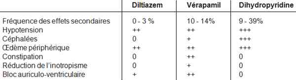

Bienvenue Sur Medical Education
Intoxication : inhibiteurs calciques
Spécialité : toxicologie /
Points importants
-
Pronostic réservé (intoxication par vérapamil notamment), une des premières causes de mort par cardiotoxique aux USA
-
Etat de choc avec trouble conductif ou arrêt cardiaque difficilement prévisible
-
Adrénaline : catécholamine de choix en urgence si état de choc et bradycardie
-
Recours possible à l'assistance circulatoire si choc cardiogénique réfractaire
Présentation clinique / CIMU
-
Les symptômes cliniques apparaissent rapidement après l'ingestion
-
Ils varient selon le type de molécule et le terrain
CONTEXTE
Présentation clinique / CIMU
- Les symptômes cliniques apparaissent rapidement après l'ingestion
- Ils varient selon le type de molécule et le terrain
CONTEXTE
Antécédents
- ATCD de TS
- Dépression
- Cardiopathie, insuffisance rénale chronique
Traitement usuel et celui des personnes de son entourage
Circonstances de survenue
- Intoxication volontaire ou accidentelle
EXAMEN CLINIQUE
A faible dose ingérée, uniquement une majoration des effets secondaires habituels
 _688 Tableau Effets secondaires et toxicité attendus des inhibiteurs calciques
- HoTA (baisse de la contractilité myocardique ou vasodilatation artérielle)
- Bradycardie et troubles de la conduction (concernant tous les étages) sont fonction de l'inhibiteur calcique en cause
A dose ingérée plus élevée, état de choc (mixte : vasoplégique et/ou cardiogénique) avec troubles du rythme et/ou de la conduction de haut degré, avec apparition de manifestations extra-cardiaques traduisant l'hypoperfusion tissulaire
- Troubles de conscience, convulsions
- Détresse respiratoire
- Acidose métabolique (lactique), insuffisance rénale aiguë oligo-anurique
- Ischémie mésentérique (possiblement liée au terrain et aux catécholamines)
- Coagulation intravasculaire disséminée ou insuffisance hépatique
Des cas d'œdème pulmonaire non cardiogénique ont été décrits avec le vérapamil et l'amlodipine, survenant à distance (48-72 h après l'ingestion) par possible augmentation de la perméabilité capillaire pulmonaire et production in situ de médiateurs pro-inflammatoires
Un arrêt cardiaque peut survenir dans 20% des cas, succédant parfois à un choc cardiogénique non ou insuffisamment traité
CIMU
- Tri 1 à 2 selon le degré des défaillances vitales
EXAMENS PARACLINIQUES SIMPLES
- SpO2
- Glycémie capillaire
- ECG (recherche de troubles conductifs : bradycardie, blocs sino-auriculaire, intraventriculaire ou auriculo-ventriculaire allant du premier au troisième degré)
FACTEURS PRONOSTIQUES
- La dose supposée ingérée
- La nature de l'inhibiteur calcique (sévérité plus marquée pour le vérapamil, puis pour le diltiazem puis pour la nifédipine)
- Les anomalies de conduction à l'ECG, l'importance de la dysfonction ventriculaire gauche (sévérité plus marquée si choc cardiogénique que vasoplégique)
- La nécessité de recourir rapidement aux catécholamines (surtout à l'adrénaline)
- L'apparition de signes d'hypoperfusion hépatique ou rénale qui compromettent le métabolisme et l'élimination du toxique
- L'existence d'une cardiopathie sous-jacente ou la co-ingestion d'un autre cardiotrope
Signes paracliniques
BIOLOGIQUE
-
Gaz du sang/lactates (au mieux artériels) (acidose métabolique hyperlactatémique)
-
Bilan des défaillances : urée, créatininémie, ASAT, ALAT, CPK, TP, TCA, fibrinogène. Stigmates de défaillance rénale, hépatique ou splanchnique
-
Glycémie (hyperglycémie [parfois acidocétose renforçant l'acidémie])
-
Ionogramme sanguin
-
BNP, troponine, CPK (recherche de défaillance cardiaque)
IMAGERIE
-
Radiographie thoracique : en dehors d'un diagnostic d'inhalation associée, elle permet de détecter un OAP dont l'origine cardiogénique ou lésionnelle reposera sur des éléments diagnostiques complémentaires (échocardiographie, cathétérisme de Swan-Ganz, PiCCO...)
-
Echocardiographie : elle permet de caractériser le type de choc, vasoplégique avec index cardiaque augmenté (le plus souvent > 4 L/min/m2), cardiogénique avec index cardiaque abaissé (le plus souvent < 2,5 L/min/m2) ou mixte. Elle permet également de définir le caractère droit, gauche ou le plus souvent biventriculaire de la défaillance cardiaque
-
Tomodensitométrie : envisager scanner abdominal si doute sur ischémie mésentérique ; peu contributive à la phase aiguë
Diagnostic différentiel
-
Dans le contexte d'intoxication, peu de diagnostics différentiels
-
Devant un choc cardiogénique avec trouble conductif, évoquer de principe une origine coronarienne
-
Se méfier d'une co-ingestion par un autre cardiotrope (digitalique, bêtabloquant, anti-arythmiques...) qui peuvent majorer les effets inotropes ou chronotropes négatifs
Traitement
TRAITEMENT PREHOSPITALIER/INTRAHOSPITALIER
Diagnostic différentiel
- Dans le contexte d'intoxication, peu de diagnostics différentiels
- Devant un choc cardiogénique avec trouble conductif, évoquer de principe une origine coronarienne
- Se méfier d'une co-ingestion par un autre cardiotrope (digitalique, bêtabloquant, anti-arythmiques...) qui peuvent majorer les effets inotropes ou chronotropes négatifs
Traitement
TRAITEMENT PREHOSPITALIER/INTRAHOSPITALIER
Stabilisation initiale
Schéma thérapeutique de l'intoxication grave par inhibiteur calcique :
-
Traitement symptomatique selon bilan :
- atropine 0,5 mg IV bolus (si bradycardie < 50/min)
- remplissage ≥ 500-1000 ml de cristalloïde (si PAS < 100 mmHg ou hypovolémie)
- intubation / ventilation mécanique si signe de gravité
- charbon activé (sauf contre-indications, toutes les 12 heures si forme à libération prolongée)
-
Catécholamines (adaptées à la surveillance clinique, biologique, ECG et hémodynamique)IV à la seringue électrique :
- noradrénaline (0,5 - 10 mg/h si choc vasoplégique)
- adrénaline (0,5 - 10 mg/h si choc mixte ± bradycardie)
-
Sels de calcium (chlorure) (surveillance calcémie) :
- 1 (à 2) g IV sur 10-20 min (jusqu'à 4 doses)
- puis perfusion continue de 20-50 mg/kg/h
-
Glucagon :
- bolus 2 (à 5) mg
- puis perfusion continue à 2 (à 10) mg/h si amélioration hémodynamique après le bolus
-
Insuline forte dose euglycémique (surveillance glycémie +/kaliémie) :
- bolus de 1 UI/kg
- puis perfusion continue de 0,5 (à 1) UI/Kg/h IVSE (apport glucosé adapté : glucosé hypertonique)
- BAV de haut degré : entraînement électrosystolique
- Arythmie mal tolérée : choc électrique externe
- Choc cardiogénique réfractaire : assistance circulatoire périphérique
- Choc vasoplégique : terlipressine ? vasopressine ? (risque d'ischémie mésentérique++)
Suivi du traitement
- Adaptation thérapeutique selon l'évolution clinico-biologique et du monitorage ECG et hémodynamique
Traitement spécifique
-
Les sels de calcium (gluconate et chlorure) IV ont été proposés, notamment en cas de collapsus réfractaire aux catécholamines mais leur efficacité clinique reste inconstante et discutée (ils augmentent la concentration extracellulaire de calcium, favorisent l'entrée de calcium dans la cellule :
- leur effet semble plus marqué sur la PA et les troubles conductifs à haute dose que sur la FC)
- il existe un risque de nécrose cutanée par voie IV périphérique
-
Le glucagon agit en stimulant l'adénylate de l'action des catécholamines par l'intermédiaire des récepteurs bêta-adrénergiques (effets inotrope voire chronotrope positifs) :
- les effets sur la PA apparaissent avec un délai de 1-5 min, mais son efficacité clinique reste inconstante
-
L'insuline euglycémique :
- dans plusieurs cas cliniques publiés d'intoxications sévères ou réfractaires, ce traitement s'est parfois révélé efficace pour réduire voire permettre l'arrêt des catécholamines
- elle s'opposerait au blocage de la sécrétion d'insuline induite par les calcium bloqueurs et améliorerait l'entrée de glucose dans les cellules et la contraction des cellules musculaires myocardique et vasculaire
- elle doit cependant être utilisée avec précaution en cas de difficulté ou d'impossibilité d'une surveillance glycémique rapprochée (pré-hospitalier)
- Les inhibiteurs des phosphodiestérases (milrinone) ont été utilisés avec succès dans quelques cas publiés mais leur efficacité n'a pas été définitivement démontrée et leur utilisation doit être prudente en raison du risque de vasodilatation
-
En cas de choc et après remplissage adapté, l'administration de catécholamines doit privilégier les molécules ayant une activité prédominante sur les récepteurs alpha-adrénergiques (adrénaline et noradrénaline) :
- la vasopressine et la terlipressine ont ainsi été proposées dans des cas de vasoplégie réfractaire (exposant au risque d'ischémies mésentérique ou des membres inférieurs)
- il en est de même pour d'autres sympathomimétiques comme la néosynéphrine
- L'entraînement électro-systolique est toujours possible dans les dysfonctions chronotropes prédominantes ou les troubles conductifs de haut degré mais n'agit pas sur la dysfonction inotrope ni la vasoplégie
- L'assistance circulatoire doit être envisagée en cas d'état de choc cardiogénique réfractaire mais ses modalités et indications doivent encore être mieux précisées lors d'intoxications massives par inhibiteurs calciques
- La 3-4-diaminopyridine et la 4-aminopyridine sont des antagonistes des canaux potassiques, actuellement à l'étude lors d'intoxications par calcium-bloqueurs (augmenterait l'influx intracellulaire de calcium)
Surveillance
-
Elle doit être réalisée dans un milieu de réanimation spécialisée en cas d'intoxication grave (sous catécholamines), avec une attention particulière au risque d'œdème pulmonaire retardé
Devenir / orientation
EN PREHOSPITALIER
-
Il existe une recommandation d'experts pour déterminer la nécessité d'hospitalisation
EN INTRAHOSPITALIER
Devenir / orientation
EN PREHOSPITALIER
- Il existe une recommandation d'experts pour déterminer la nécessité d'hospitalisation
EN INTRAHOSPITALIER
Critères d'admission
- Toute intoxication par calcium bloqueur avec signe de gravité doit être hospitalisée en milieu de réanimation spécialisée
Critères de sortie
- Il faut assurer une période de surveillance de 72 h pour éliminer tout risque d'OAP secondaire à l'intoxication et surveiller les médicaments à libération prolongée (LP)
-
Aucune surveillance aux urgences n'est nécessaire si l'ensemble des critères suivants sont présents :
- pas de contexte suicidaire
- asymptomatique avec prise > 6 h si forme immédiate et 18 h pour formes à libération prolongée
- pas d'antécédent cardiaque ni de traitement par bêtabloquant
- surveillance par proche possible au domicile
-
dose suspectée ingérée connue :
- amlodipine < 10 mg
- bépridil < 300 mg
- diltiazem < 120 mg (non LP) 600 mg (LP)
- nicardipine < 60 mg
- vérapamil < 120 mg
- Toute intoxication doit avoir une évaluation psychiatrique avant la sortie
Mécanisme / description
MECANISME
-
Les inhibiteurs calciques appartiennent à la classe 4 de Vaughan-Williams des anti-arythmiques, et présentent des propriétés anti-angineuses, anti-hypertensives et inotropes négatives
-
Toutes ces molécules bloquent les canaux calciques lents L-voltage dépendants indispensables à la genèse et à la conduction du potentiel d'action dans le tissu contractile cardiaque et les cellules musculaires lisses vasculaires
-
Certains inhibiteurs ont un tropisme vasculaire prédominant (nifédipine ou nicardipine, par les canaux récepteurs dépendants) et d'autres un tropisme cardiaque (diltiazem ou vérapamil par les canaux voltage-dépendant), ceci rendant compte d'indications et d'effets secondaires cardiovasculaires potentiellement différents
-
Cependant, aux doses toxiques par rapport aux doses pharmacologiques, la différence de sélectivité tissulaire s'atténue largement, et toutes ces molécules peuvent posséder un effet inotrope négatif et/ou une vasodilatation
METABOLISME
-
Effet de premier passage hépatique est important mais variable selon la molécule
-
Les volumes de distribution sont importants > 2 L/kg, sauf pour la nicardipine (0,6 à 1,4 L/kg)
-
Les demi-vies s'allongent en cas de surdosage, après saturation du métabolisme par les cytochromes P450
-
Le vérapamil et le diltiazem ont des métabolites actifs, respectivement le norvérapamil et le diacétyl-diltiazem
-
L'élimination est mixte (urinaire et digestive)
Bibliographie
-
Mégarbane B, Donetti L, T. Blanc T, Chéron G, Jacobs F, groupe d'experts de la SRLF. - Intoxications graves par médicaments et substances illicites en réanimation. - Réanimation 2006; 15:332-42
-
Olson KR, Erdman AR, Woolf AD, Scharman EJ, Christianson G, Caravati EM, Wax PM, Booze LL, Manoguerra AS, Keyes DC, Chyka PA, Troutman WG; American Association of Poison Control Centers. - Calcium channel blocker ingestion: an evidence-based consensus guideline for out-of-hospital management. - Clin Toxicol (Phila) 2005; 43:797-822
-
Baud FJ, Mégarbane B, Deye N, Leprince P. - Clinical review: Aggressive management and extracorporeal support for drug-induced cardiotoxicity. - Crit Care 2007; 11:207
-
Deye N, Mégarbane B, Baud FJ. Insuffisance circulatoire aiguë toxique. Dans : Insuffisance circulatoire aiguë. Richard C, Teboul JL, Vincent JL. Elsevier. 2009. Issy Les Moulineaux. Pages 548-88
Bibliographie
- Mégarbane B, Donetti L, T. Blanc T, Chéron G, Jacobs F, groupe d'experts de la SRLF. - Intoxications graves par médicaments et substances illicites en réanimation. - Réanimation 2006; 15:332-42
- Olson KR, Erdman AR, Woolf AD, Scharman EJ, Christianson G, Caravati EM, Wax PM, Booze LL, Manoguerra AS, Keyes DC, Chyka PA, Troutman WG; American Association of Poison Control Centers. - Calcium channel blocker ingestion: an evidence-based consensus guideline for out-of-hospital management. - Clin Toxicol (Phila) 2005; 43:797-822
- Baud FJ, Mégarbane B, Deye N, Leprince P. - Clinical review: Aggressive management and extracorporeal support for drug-induced cardiotoxicity. - Crit Care 2007; 11:207
-
Deye N, Mégarbane B, Baud FJ. Insuffisance circulatoire aiguë toxique. Dans : Insuffisance circulatoire aiguë. Richard C, Teboul JL, Vincent JL. Elsevier. 2009. Issy Les Moulineaux. Pages 548-88
Auteur(s) : Nicolas DEYE, Pierre BRUN